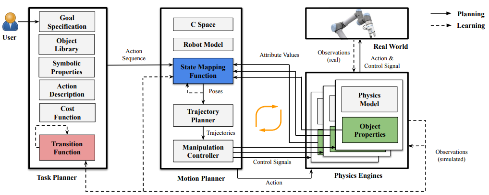
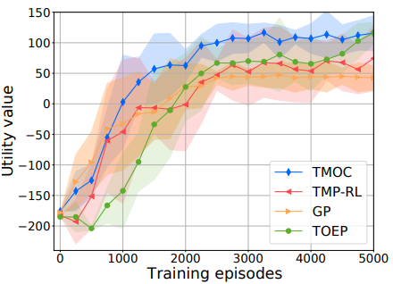
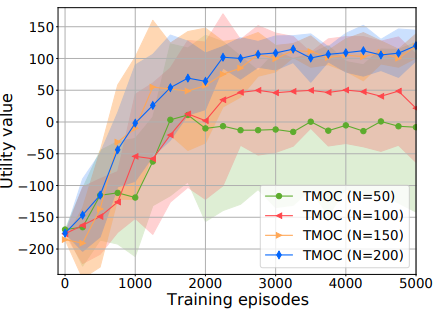

Yan Ding, Xiaohan Zhang, Xingyue Zhan, Shiqi Zhang
SUNY Binghamton
IEEE RA-L, 2022
[Paper] [Code] [Demo] [Presentation]
Abstract
Task and motion planning (TAMP) algorithms have been developed to help robots plan behaviors in discrete and continuous spaces. Robots face complex real-world scenarios, where it is hardly possible to model all objects or their physical properties for robot planning (e.g., in kitchens or shopping centers). In this paper, we define a new object-centric TAMP problem, where the TAMP robot does not know object properties (e.g., size and weight of blocks). We then introduce Task-Motion Object-Centric planning (TMOC), a grounded TAMP algorithm that learns to ground objects and their physical properties with a physics engine. TMOC is particularly useful for those tasks that involve dynamic complex robot-multi-object interactions that can hardly be modeled beforehand. We have demonstrated and evaluated TMOC in simulation and using a real robot. Results show that TMOC outperforms competitive baselines from the literature in cumulative utility.
Contribution
The first contribution of this work is a new grounded, object-centric TAMP framework, called task and motion Planning with Physics-based Simulation (PPS). The uniqueness of PPS lies in the inclusion of a physics engine for grounding objects and their physical properties. Object grounding enables the robot to collect simulated interaction experiences for policy learning purposes. The PPS framework is general enough to accommodate different TAMP problems that vary in model completeness.
Our second contribution is an algorithm, called Task Motion Object-Centric planning (TMOC), that addresses a challenging PPS problem where object properties are not provided. TMOC is particularly useful for those TAMP domains that involve complex multi-object dynamic interactions. Our TMOC robot can ground objects in a high-fidelity physics engine, learn object properties to facilitate the grounding, and improve its task-motion planning skills.
Framework
|  |
An overview of the TMOC algorithm for our PPS problem with unknown object properties (L in green), state mapping function (Y in blue), and transition function (T in red). The main components of TMOC include a task planner for sequencing symbolic actions, a motion planner for computing motion trajectories, and a physics engine for simulating multiple grounded worlds. TMOC takes object library, task domain description, goal specification, cost function, motion domain description and state mapping function as input. TMOC aims to compute task-motion plans to achieve task-level goals while maximizing cumulative utilities. Using TMOC, a robot learns object properties (L) from task-completion experience, and leverages the learned properties to further improve its task-motion planning skills (Y and T) over time.
Main Idea
TMOC aims to address a PPS problem, where object properties (L), state mapping function (Y), and transition function (T) are unknown. Our TMOC algorithm aims to compute task-motion plans to achieve task-level goals while maximizing cumulative utilities.
TMOC learns L, Y, and T in each iteration, where the robot completes a task once in the real world and N times in simulation. In each iteration, each of L, Y, and T is learned under the current estimation of the other two, while a TMOC agent plans at task and motion levels.
Experiment Results
|  |  |
Left: The figure illustrates the learning curves for utility value, averaged over the 15 runs with the shaded regions representing one standard deviation from the mean. From the results, we get the important observation that TMOC performs better than the baselines in terms of cumulative utility and learning rate.
Right: There is no significant improvement in learning rate or cumulative utility when we increased the particle number from N=150 to N=200. Therefore, we believe N=150 is sufficient to the robot in our domain. This observation can serve as a reference to TMOC practitioners.
Acknowledgements
This work has taken place in the Autonomous Intelligent Robotics (AIR) Group at SUNY Binghamton. AIR research is supported in part by grants from the National Science Foundation (IIS-1925044 and REU Supplement), Ford Motor Company (URP Awards), OPPO (Faculty Research Award), and SUNY Research Foundation